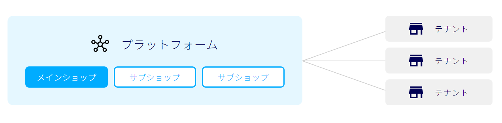

主商户、子商户与租户商户
平台有主商户和子商户两类商户。
二者分别记为平台（主商户）和平台（子商户）。
同一组织下的平台商户和租户商户合称为平台构成。
平台构成示意图

| 商户类型 | 概要 |
|---|---|
| 平台（主商户） | 创建平台时最先生成的商户。 主商户具备管理平台构成的功能，每个平台构成只有一个主商户。 只有主商户可以向租户商户收取平台使用费。 |
| 平台（子商户） | 平台可出于特定目的，在主商户之外另行创建子商户。 可在主商户管理后台的“构成”菜单创建多个子商户。 每个子商户均须单独审核。 子商户的使用示例 •主商户和子商户分别使用各自的管理后台和用户。 •将面向客户（BtoC）的支付和面向租户商户（BtoB）的支付放在不同商户下管理，分别设置账单显示名称。 账单显示名称是出现在购买者卡片账单上的商户名称。 •将单次支付和订阅支付放在不同商户下管理，分别设置账单显示名称。 |
| 租户商户 | 由平台创建及管理的商户，在功能及合同方面受平台管理。 租户商户通常是平台所提供市场中的入驻商家，或平台所提供的带支付功能解决方案的用户。 |